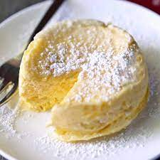

Microwave Cheesecake

Description :
Oh who doesn't love cheesecake? This quick and easy to make recipes can be made in
some minutes. You can always do something extra and top it off with jam, jelly or some fruits!
Ingredients:
- 1 tablespoon Butter
- 1 tablespoon sugar
- 2 sheets Graham crackers
- 3 drops Vanilla extract
- 4 oz cream cheese(115 gm), softened
- 5 fresh raspberries(optional)
Preparation
- Melt the butter in a small microwaveable ramekin. Tilt the ramekin to coat the sides.
- Crush the graham crackers into fine crumbs, then add to the ramekin with the butter and mix well. With a spoon, press the crust evenly against the bottom of the dish.
- In a small bowl, combine the cream cheese, sugar, and vanilla, stirring until there are no lumps.
- Spread the filling on top of the graham cracker crust.
- Microwave for at least 4 minutes, 45 seconds at a time, at half power. Make sure the cheesecake does not bubble over the sides of the ramekin.
- Chill in the freezer for at least 30 minutes, until completely cool to the touch.
- With a knife, loosen the edges of the cheesecake, then invert onto a plate, or eat straight from the dish.
- Top with something if you want.
- Enjoy!